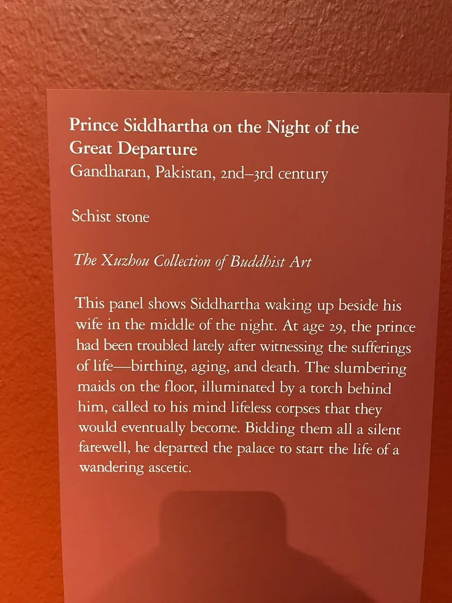
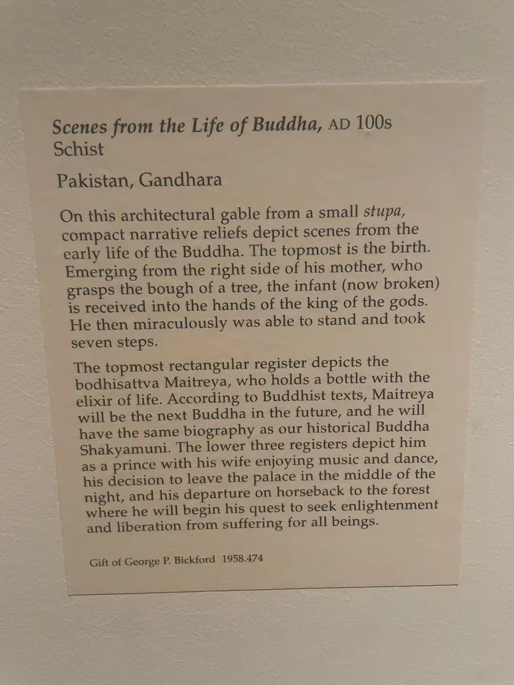

10 / 石上的一生
离开宫殿的那一夜
一张床榻，一个尚未离开的夜晚。

图片各自缩放，非实物等比例；尺寸见作品资料。
虚舟这块浮雕没有把出家简化为一匹奔离宫门的马。上层是卧室：床上的人物与坐起的太子，构成即将离去之前的停顿。下方侍从或乐人聚在一起，身体倾斜、互相倚靠。立柱和帷帐围住室内，把人的姿态放在一个仍然日常、尚未空去的空间里。出家之夜的重量，落在“还没有离开”的这一刻。
克利夫兰的多层佛传则采用另一种讲述方法。楼层般的横带把许多场景叠起来，树、柱子与人物使每一层保持自己的边界。馆方解释指出，上部诞生场景之后还插入了未来佛弥勒，随后回到太子的宫廷生活与离去。它并非从上到下毫无插叙的一条时间线，图像也可以预示将来。 [1]
把两件放在一起，能看见叙事的两种速度。一块让目光停在床榻与沉睡的人之间，另一块让目光随层层场景移动。人物的小头、转身和手势承担着讲故事的工作；建筑则既是场所，也是分段的工具。从卧室的停顿读到一层层向下展开的故事，同样的离去，在两块石面上有了不同的节奏。
相互参看

本篇作品
悉达多出家之夜 · 虚舟收藏 · 在休斯顿美术馆展出
- 原题名
- The Departure of Prince Siddhartha
- 年代
- 2—3世纪
- 材料
- 片岩
- 收藏／展出
- 虚舟收藏 · 在休斯顿美术馆展出
- 地域关系
- 犍陀罗地区；具体原址未详
佛传故事浮雕 · 1958.474
- 原题名
- Scenes from the Life of Buddha
- 年代
- 2世纪
- 材料
- 片岩
- 尺寸
- Overall: 68 x 41.3 cm (26 3/4 x 16 1/4 in.)
- 编号
- 1958.474
- 收藏／展出
- 克利夫兰艺术博物馆
- 地域关系
- 犍陀罗地区；具体原址未详
资料与来源
现场展签



